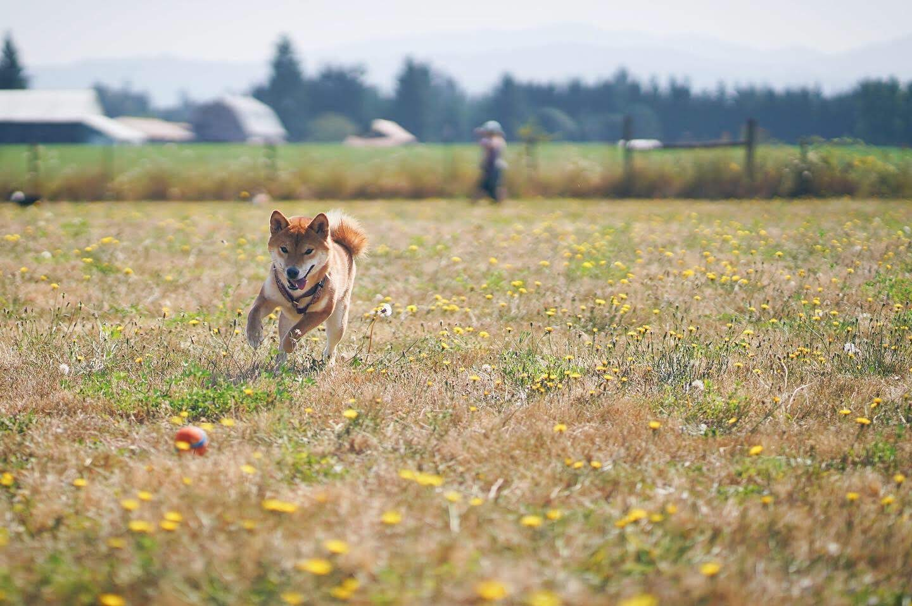

Ichi is my dog!

Some years ago I somewhat unexpectedly started learning about dog showing with her! The hardest part were the months I spent tugging her screaming and thrashing around the ring at practice until finally I found a collar type that she didn't loathe. Now the screaming and thrashing is extremely minimal.
But really most of the time she chases balls and sleeps a lot and sheds on everything and is staunchly anti-fashion.



I post more photos of her here.